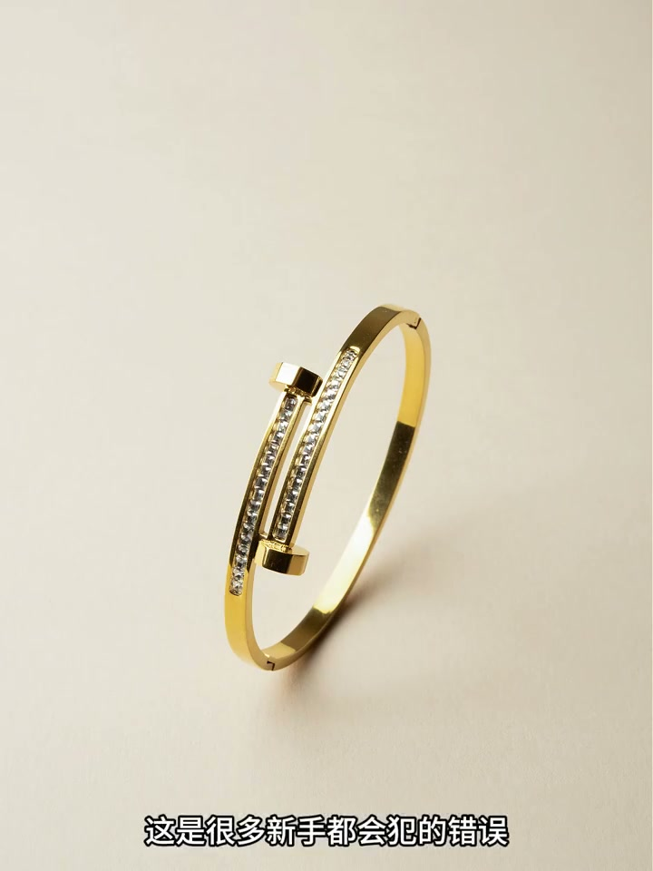
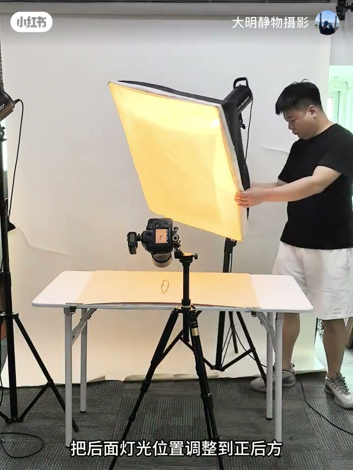
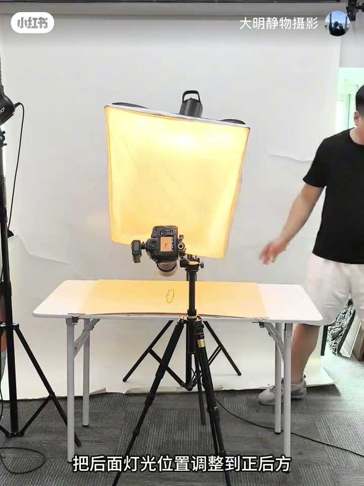
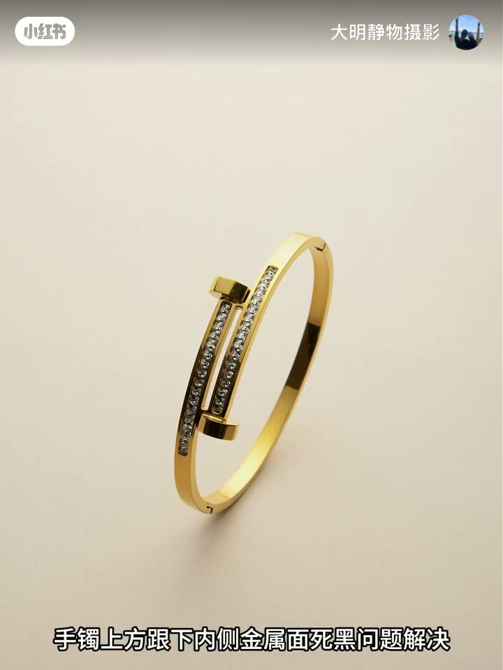
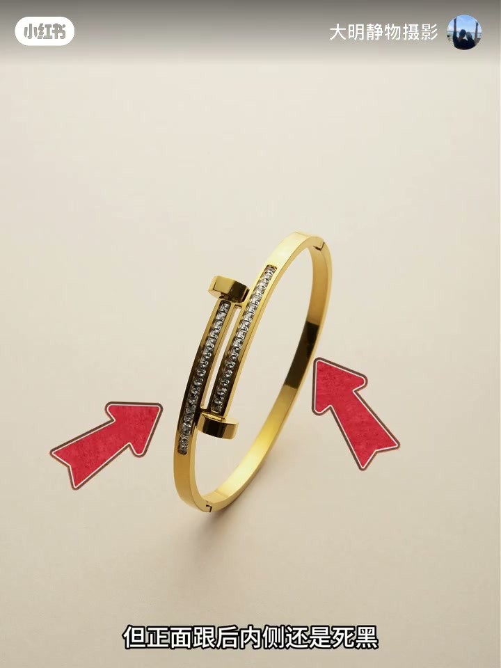

内容要点
一支 36 秒的珠宝静物摄影布光教程。新手拍高反光珠宝直接用柔光箱，金属面总是死黑，以为是灯不够又加一盏灯，问题依旧。UP 主「大明静物摄影」演示专业解法：关掉左边的灯、把后方灯光调整到正后方、用硫酸纸做天幕，先解决手镯上下金属面的死黑；再用左右各放一张银卡纸，把正面灯照射后的内侧死黑也补上。核心观点：珠宝死黑不是灯不够亮，而是光的数量和方向没搭配对。
知识结构
高反光珠宝直接用柔光箱拍，金属面死黑；新手以为灯不够又加灯，死黑依旧。
关掉左边灯光，把后方灯光调到正后方，用硫酸纸做天幕，先拍一张看光线。
手镯上、下内侧金属面死黑解决，金属质感出现；正面灯照射后的内侧仍死黑，左右各放一张银卡纸即可彻底解决。
珠宝拍摄死黑 = 灯光数量没用的核心是灯光方向与柔化方式不对：关侧灯、正后方主光、硫酸纸天幕解决大面积死黑，银卡纸补光解决局部死黑。方法比灯多重要。
00:00-00:14误区：柔光箱直拍高反光珠宝
视频开门见山：「高反光珠宝视频拍摄直接用柔光箱，这是很多新手都会犯的错误。」高反光金属面在柔光箱直射下很容易拍成死黑。
更常见的错误是归因：新手以为死黑是灯不够，于是再加一盏灯——「结果拍出的图金属面死黑问题依然存在」。问题不在灯的数量，而在光的方向与柔化方式。


00:15-00:23专业第一步：减灯、正后方、硫酸纸天幕
专业摄影师的处理是减灯而非加灯：「左边灯光直接关掉」，把后面灯光位置调整到正后方。
再用柔光介质「准备一张硫酸纸做天幕」——硫酸纸把硬光打散成柔光，最后「先拍一张看一下光线」验证效果。三件事的核心：减少光源数量、统一光源方向、用散射介质柔化。



00:24-00:36结果与补招：银卡纸解决局部死黑
调整后效果立竿见影：「手镯上方跟下内侧金属面死黑问题解决，金属质感也有了。」大面积死黑被正后方主光 + 天幕解决。
但还有最后一块死角：「正面灯照射后的内侧还是死黑。」UP 主的解法简单到出乎意料——「在左右两边各放一张银卡纸，这样就可以了」。银卡纸利用反射补光，把正面灯的余光折回阴影区，局部死黑被彻底补上。
整支视频的结论很明确：珠宝死黑不是灯越多越好，方向与柔光方法才是关键。



完整转录（15段）
以下文本由 Whisper medium 模型自动转录，可能存在少量识别误差，已尽可能修正。
高反光珠宝视频拍摄直接用油光箱
这是很多新手都会犯的错误
往往金属面拍的死黑
以为是灯上还会再加一盏灯
结果拍出的图金属面死黑问题依然存在
来看看专业珠宝摄影师怎么处理这种问题
左边灯光直接关掉
把后面灯光位置调整到正后方
准备一张硫酸纸做天幕
先拍一张看一下光线
手镯上方跟下内侧金属面死黑问题解决
金属剂感也有了
但正面灯后内侧还是死黑
解决这个问题只要在左右两边各放一张银卡纸
这样就可以了